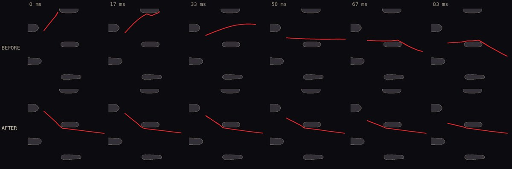
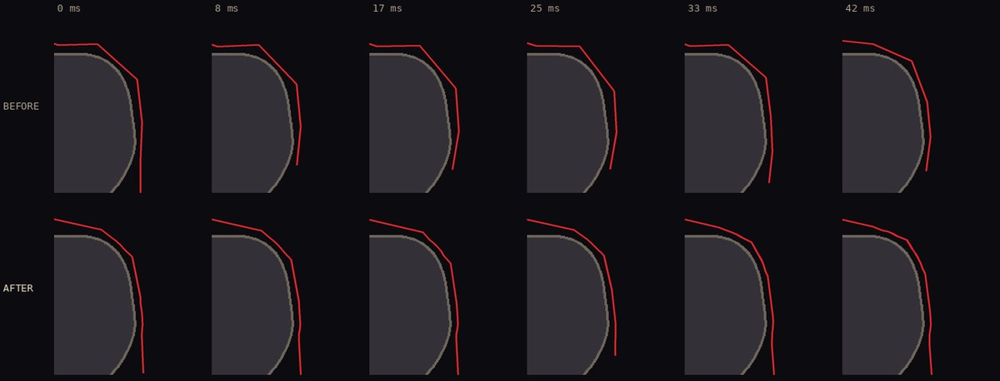
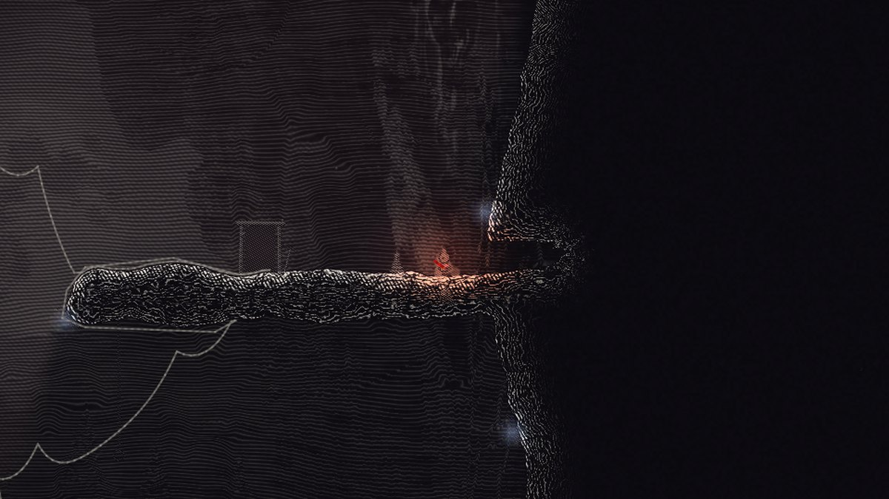
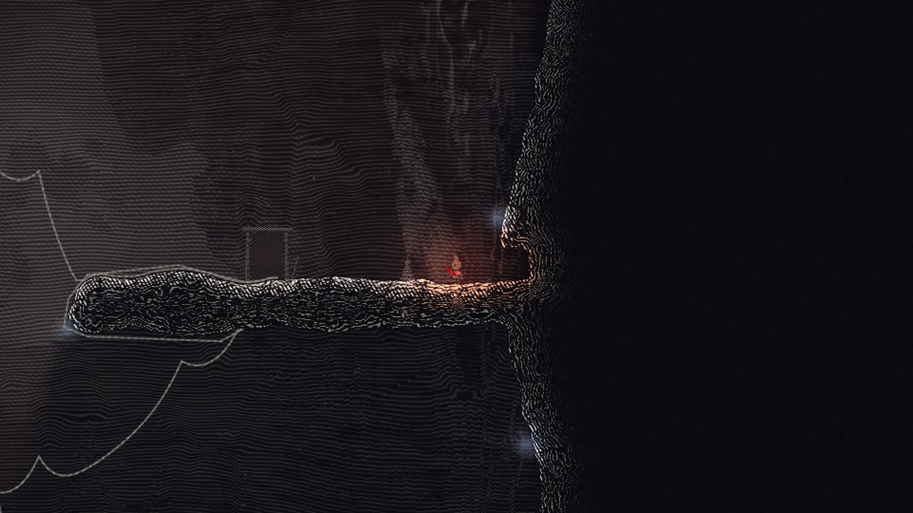
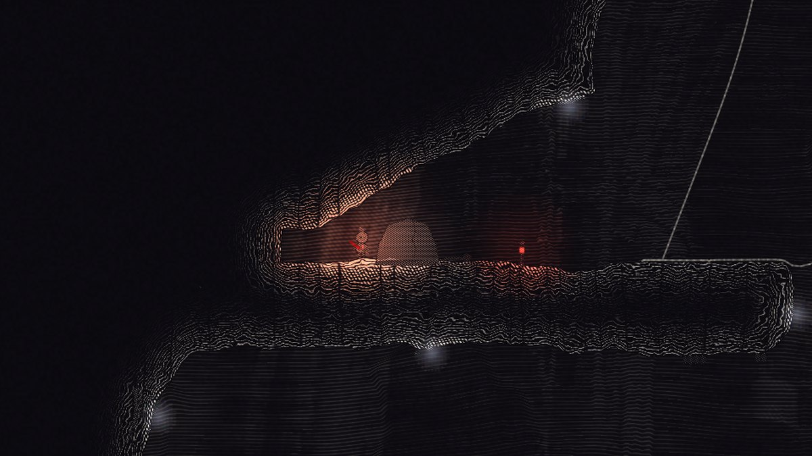
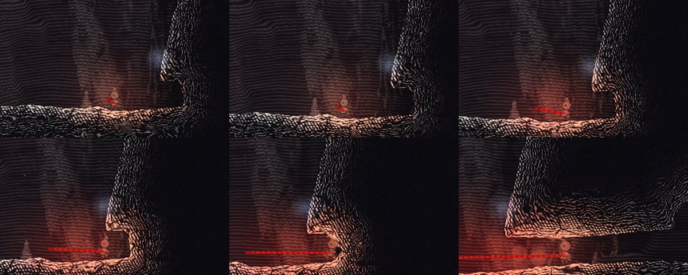

The thread keeps its shape on the rockthe rock opens only when you touch it
The thread no longer shakes, whips or slips through thin rock at edges and corners. A hidden room now opens only once your body actually pushes into the part drawn as rock; before, it opened from up to 2.8 m away. The rolling barrels are unchanged; the last section explains the idea behind them.
the thread is acting a little unstable on the edges of rocks, especially corners, please fix it
The thread is a chain of small weights 25 cm apart, pulled toward the doll and pushed out of the rock. I measured it with bots that move, grip, swing and fall all over the game, and with two staged runs: hanging from the first lip below pole 1, and climbing the thin slabs up to the Root Gardens alcove. Three faults showed up, all at edges.
The fixes:


“Random players” is 102 runs of 20 s from every pole; a frame counts as shaking where part of the drawn thread jumps out by more than 3 cm and comes back the next frame. “Lip” and “Slabs” are the two staged runs.
| Before | After | |
|---|---|---|
| Random players: frames where it shakes | 0.57 % | 0.25 % |
| … shaking points next to rock | 1,879 | 628 |
| Lip: corner shakes over 1.5 cm | 34, worst 4.1 cm | 15, worst 2.6 cm |
| Slabs: jumps over 15 cm | 27, worst 97 cm | 0 |
| Slabs: stuck across a slab | 150 | 0 |
| Frames with thread inside rock | 0 | 0 |
All the route checks give the same results as before: ring gaps, lips, reach, rooms, hands, and the whole-game bot in both modes. One run changed. Over the slabs in the Hall of Chairs, the lowest yarn left went from 73 m to 64 m, because the thread now goes round the slabs where it used to slip through them. The extra work costs about a hundredth of a millisecond per frame.
The hidden rooms should open only when I actually cross the part that looks like rocks, not sooner
A room used to open as soon as you came within a few metres of its crack, by walking distance (3 m for most rooms). That was meant to stop the doll ever being drawn inside rock, but it gave the room away from far off. Now the room opens only when your body pushes into the rock that hides it. It crumbles outward from the spot you touch, as before. Standing on the far side of a wall still does nothing.


BeforeAfterThe Diggers' Cache, the doll on the same spot in both: 2.7 m away it used to be open already

BeforeAfterThe Ringer's Cell: same spot, the crack at the far left is now still closed

| Room | Opened, at the earliest | Opens now |
|---|---|---|
| The Cellar | 2.32 m before it | 13 cm into it |
| The Diggers' Cache | 2.68 m before it | 7 cm into it |
| The Seed Hollow | 1.46 m before it | 13 cm into it |
| The Ringer's Cell | 2.62 m before it | 12 cm into it |
| The Sill | 1.66 m before it | 7 cm into it |
| The Last Basket | 2.72 m before it | 6 cm into it |
| The Tally | 2.78 m before it | 12 cm into it |
| The Held Breath | 2.59 m before it | 10 cm into it |
| The Quiet Room | 2.62 m before it | 6 cm into it |
| The Shoe | 2.67 m before it | 8 cm into it |
| One you haven't found yet | 2.75 m before it | 8 cm into it |
Distances are from the doll's body to the face of the drawn rock, found by trying every spot of open air around each room. Every room can still be opened; the room checks and the shelf run collect their keepsakes as before.
why do those rolling barrels stall over me? I guess it is like that by design but what's the idea?
Yes, it's on purpose. They are bobbins as big as carts, rolling up and down their lanes in the Treadles and below, and one that hits you crushes you. Your thread is the way past them:
If you'd rather it rolled on past you, or stopped for a shorter time, those are one-line changes.
faceD, the same shape terrain.js draws)